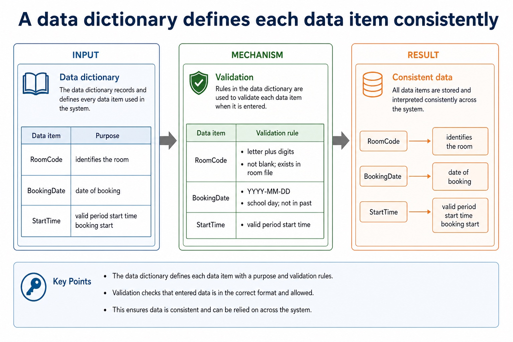
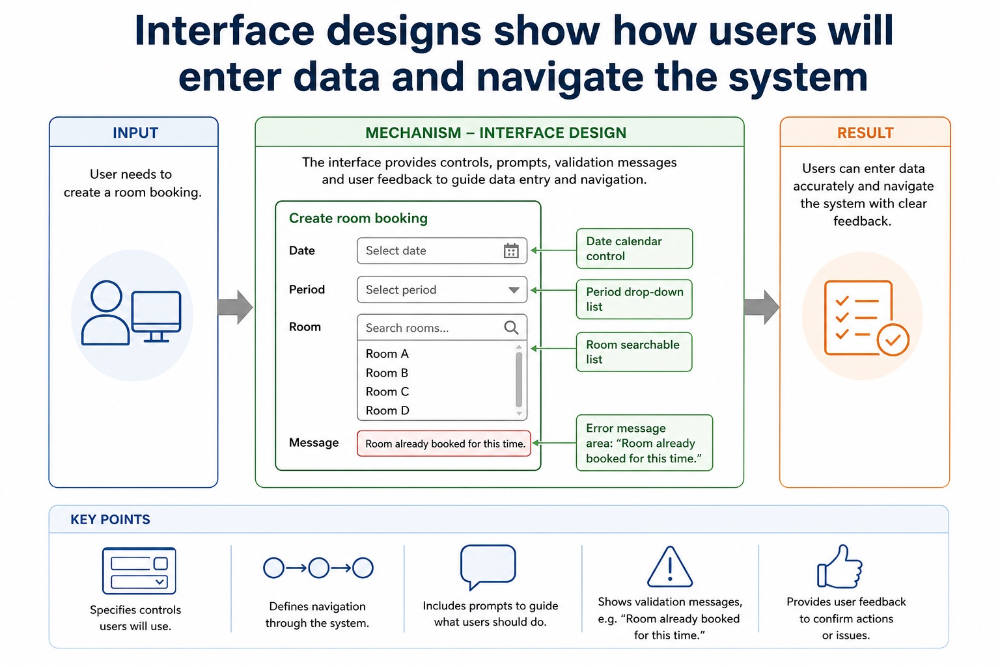
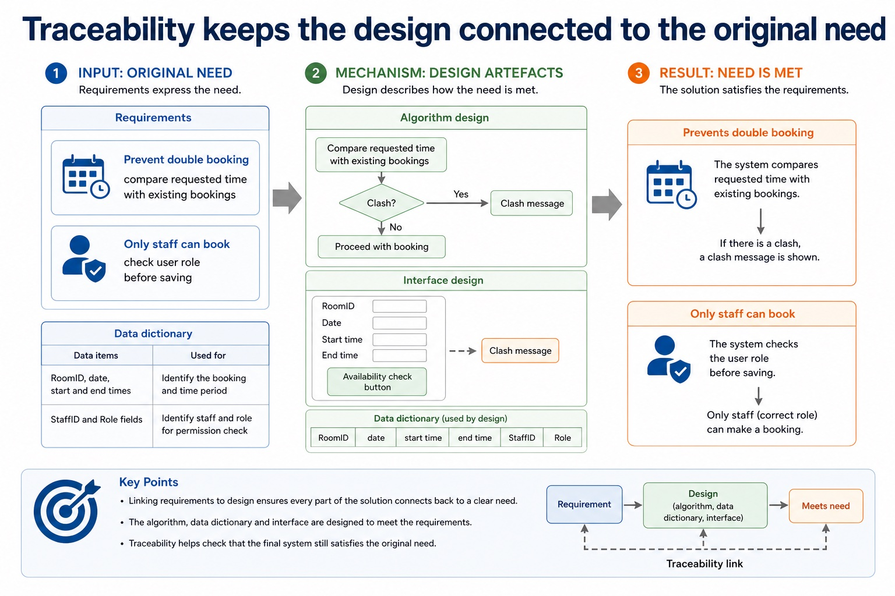
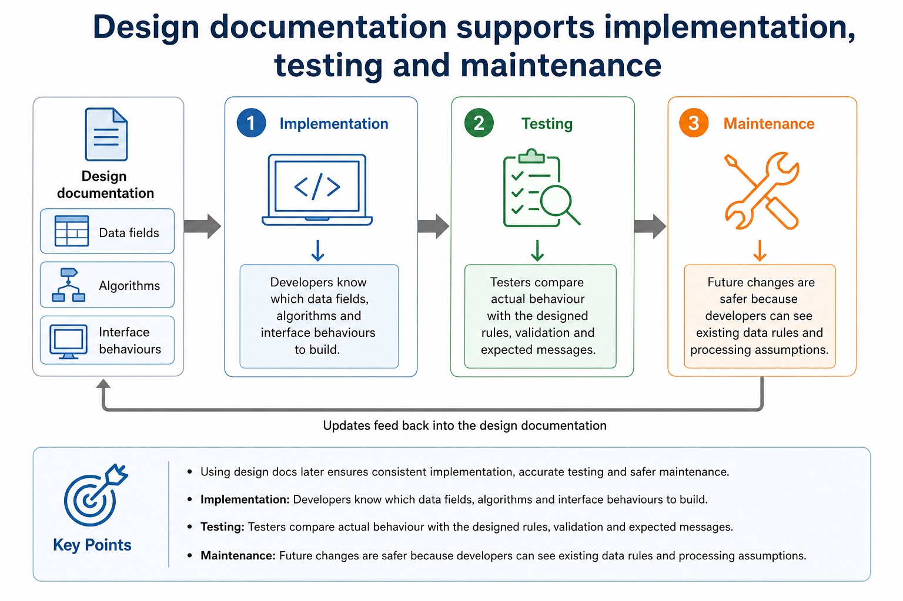
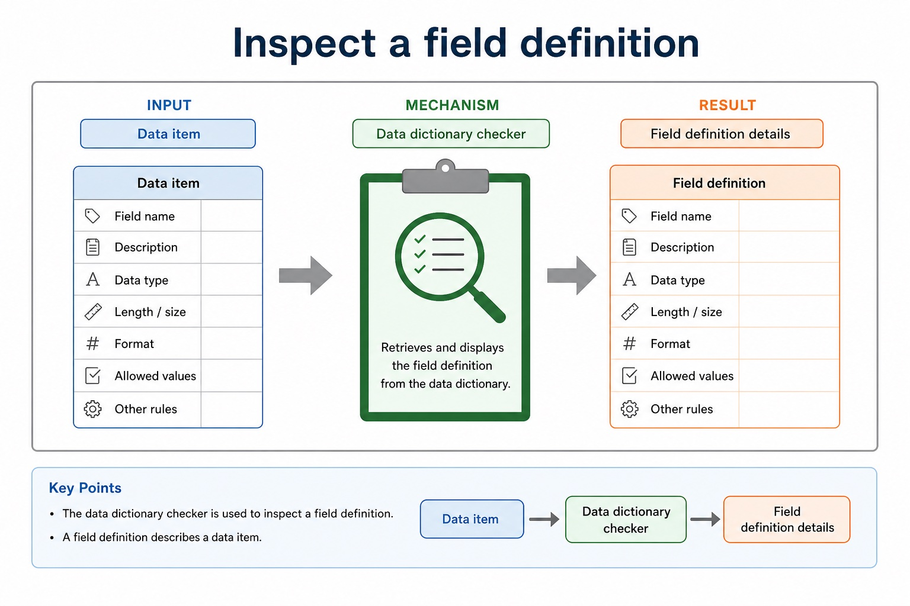

A syntax error breaks the language grammar and is normally exposed by a translator or an IDE's dynamic syntax check. A logic error uses valid syntax but follows the wrong algorithm, so a trace, dry run, walkthrough or deliberately selected test can expose an unexpected result. A run-time error occurs during execution, such as division by zero or opening a missing file, so exception messages and run-time diagnostics help locate it.
After an error is exposed, locate the responsible statement and identify the error type before changing it. Correct the cause, not only the observed output, then rerun the failing test and relevant regression tests. Avoid faults by using clear identifiers, modular design, validation, desk checking, peer walkthroughs and a planned set of normal, abnormal and extreme/boundary tests.
No single method proves that a program has no remaining faults. Translation can expose syntax faults but not every logic fault; testing can reveal failures for selected cases but cannot demonstrate correctness for every possible input.
IDE presentation features include prettyprint and expand/collapse code blocks; expand/collapse changes the displayed view, not program execution.
A runtime error occurs while the program is executing; runtime diagnostics help locate the statement that caused the failure.
Program errors can be exposed by suitable test data and expected results, located with trace output or breakpoints, and corrected before the same tests are repeated to confirm the fix.
Worked example: Correct three different faults
A missing ENDIF is a syntax error exposed during translation and corrected by closing the selection. Mark > 50 for a pass boundary of 50 is a logic error exposed by tracing Mark = 50 and corrected to Mark >= 50. Total / Count when Count may be 0 is a run-time risk exposed during execution and avoided by testing Count before division.
Logic errors make the program do the wrong thing
Logic errors make the program do the wrong thing: source-grounded visual explanation.
Lesson fact: Meaning The code is syntactically valid and may run, but the algorithm or condition is wrong.
Lesson fact: Examples Using < instead of <= , wrong formula, wrong loop condition or off-by-one error.
Lesson fact: Detection Usually found by testing, tracing or comparing actual output with expected output.
Lesson fact: Common error A translator may not detect it because the instructions are legal.
Core syllabus practice
Expose, locate and correct program errors: apply and assess
Targeted practice
1. Which method can expose a syntactically valid wrong boundary?
Show answer
A trace, dry run, walkthrough or selected boundary test can expose the wrong result.
2. Why is a translator insufficient for all logic errors?
Show answer
Logic errors can obey the language grammar, so translation may succeed even though the result is wrong.
3. What must happen after a correction?
Show answer
Rerun the failing test and relevant regression tests to check the correction and existing behaviour.
Exam-style question
6 marks
For each fault, state its type, one way to expose or locate it, and the correction: a missing ENDIF; IF Mark > 50 when 50 should pass; Average <- Total / Count when Count can be zero.
Show MS
Answer
Guidance
Marks
missing ENDIF identified as syntax error and translator/dynamic syntax check used
Do not accept changing the expected result to hide a program fault, or claim that successful translation proves the algorithm correct.
1
adds the required ENDIF
1
Mark > 50 identified as logic error and boundary trace/test at 50 used
1
changes the condition to Mark >= 50 or equivalent
1
division by zero identified as run-time error/risk and execution/test diagnostics used
1
guards the division by checking Count or handles the zero case
Design documentation is the bridge between “what users need” and “what developers build”.
This lesson focuses on three design artefacts: algorithm designs, data dictionaries and interface designs.
Chinese support: design documentation 设计文档, algorithm design 算法设计, data dictionary 数据字典,
interface design 界面设计, traceability 可追踪性。
Identifywhich design artefact fits a scenario
Describealgorithm, data dictionary and interface design contents
Linkrequirements to implementation, testing and maintenance
Requirementreject double bookingswhat is needed
Algorithmcheck existing recordsprocessing rule
Data dictionaryRoomID : STRING(6)data rule
Interfacedate, time, room controlsuser interaction
Why this matters
Design documentation gives developers, testers and maintainers a shared plan. Without it, the project may look active while quietly drifting away from the requirements.
Common error
Requirements say what the system must do. Design documentation says how the system will be structured before implementation begins.
Warm-up hook
Which document says RoomID is a STRING of length 6 and must not be blank?
Scenario: a school room booking system. Pick the most precise artefact.
Choose the artefact that defines data item rules.
Design documentation purpose
Design documents translate requirements into a buildable plan
Before coding
They decide data structures, processing logic and user interaction before the implementation language takes over.
For testers
They provide expected rules and interface behaviour so tests can check more than “it seems fine”.
For maintenance
They help future developers understand why the system works in a particular way.
A useful design document is specific enough to guide construction, but not just a pasted block of final program code.
Design documents translate requirements into a buildable plan
Design documents translate requirements into a buildable plan: source-grounded visual explanation.
Lesson fact: Design documentation purpose
Lesson fact: Before coding
Lesson fact: They decide data structures, processing logic and user interaction before the implementation language takes over.
Lesson fact: For testers
Lesson fact: They provide expected rules and interface behaviour so tests can check more than “it seems fine”.
Lesson fact: For maintenance
Lesson fact: They help future developers understand why the system works in a particular way.
Lesson fact: A useful design document is specific enough to guide construction, but not just a pasted block of final program code.
Algorithm design documents
Algorithm designs describe the processing steps
They may use Cambridge-style pseudocode, flowcharts or structure diagrams. Java can support learning, but the exam standard remains Cambridge pseudocode.
Cambridge-style pseudocode design
ClashFound ← FALSE
FOR Index ← 1 TO NumberOfBookings
Current ← BookingList[Index]
IF Current.RoomID = NewRoomID AND Current.Date = NewDate THEN
IF TimesOverlap(Current, NewBooking) THEN
ClashFound ← TRUE
ENDIF
ENDIF
NEXT Index
Java support only
// Java support example, not exam pseudocode
boolean clashFound = false;
for (Booking booking : bookingList) {
if (booking.roomId.equals(newRoomId)
&& booking.date.equals(newDate)
&& timesOverlap(booking, newBooking)) {
clashFound = true;
}
}
Data dictionary
A data dictionary defines each data item consistently
Name
Type
Size
Format
Validation
Purpose
RoomID
STRING
6
letter plus digits
not blank; exists in room file
identifies the room
BookingDate
DATE
fixed
YYYY-MM-DD
school day; not in past
date of booking
StartTime
TIME
fixed
HH:MM
valid period start time
booking start
StaffID
STRING
8
staff code
must match staff record
person making booking
A data dictionary defines each data item consistently

A data dictionary defines each data item consistently: source-grounded visual explanation.
Lesson fact: Data dictionary
Lesson fact: Validation
Lesson fact: letter plus digits
Lesson fact: not blank; exists in room file
Lesson fact: identifies the room
Lesson fact: BookingDate
Lesson fact: YYYY-MM-DD
Lesson fact: school day; not in past
Lesson fact: date of booking
Lesson fact: StartTime
Lesson fact: valid period start time
Lesson fact: booking start
Interface designs
Interface designs show how users will enter data and navigate the system
Create room booking
Error message area: “Room already booked for this time.”
Interface design is not just “make the screen pretty”. It specifies controls, navigation, prompts, validation messages and user feedback.
Interface designs show how users will enter data and navigate the system

Interface designs show how users will enter data and navigate the system: source-grounded visual explanation.
Lesson fact: Interface designs
Lesson fact: Create room booking
Lesson fact: Date calendar control
Lesson fact: Period drop-down list
Lesson fact: Room searchable list
Lesson fact: Error message area: “Room already booked for this time.”
Lesson fact: Interface design is not just “make the screen pretty”. It specifies controls, navigation, prompts, validation messages and user feedback.
Linking requirements to design
Traceability keeps the design connected to the original need
Requirement
Algorithm design
Data dictionary
Interface design
Prevent double booking
compare requested time with existing bookings
RoomID, date, start and end times
availability check button and clash message
Only staff can book
check user role before saving
StaffID and Role fields
login screen and disabled guest action
Traceability keeps the design connected to the original need

Traceability keeps the design connected to the original need: source-grounded visual explanation.
Lesson fact: Linking requirements to design
Lesson fact: Requirement
Lesson fact: Algorithm design
Lesson fact: Data dictionary
Lesson fact: Interface design
Lesson fact: Prevent double booking
Lesson fact: compare requested time with existing bookings
Lesson fact: RoomID, date, start and end times
Lesson fact: availability check button and clash message
Lesson fact: Only staff can book
Lesson fact: check user role before saving
Lesson fact: StaffID and Role fields
Using design docs later
Design documentation supports implementation, testing and maintenance
Implementation
Developers know which data fields, algorithms and interface behaviours to build.
Testing
Testers compare actual behaviour with the designed rules, validation and expected messages.
Maintenance
Future changes are safer because developers can see existing data rules and processing assumptions.
Design documentation supports implementation, testing and maintenance

Design documentation supports implementation, testing and maintenance: source-grounded visual explanation.
Lesson fact: Using design docs later
Lesson fact: Implementation
Lesson fact: Developers know which data fields, algorithms and interface behaviours to build.
Lesson fact: Testers compare actual behaviour with the designed rules, validation and expected messages.
Lesson fact: Maintenance
Lesson fact: Future changes are safer because developers can see existing data rules and processing assumptions.
Interactive artefact chooser
Pick the best document for the job
Data dictionary checker
Inspect a field definition
Inspect a field definition

Inspect a field definition: source-grounded visual explanation.
Lesson fact: Data dictionary checker
Lesson fact: Data item
Worked examples
Three ways design documentation earns marks
Practice with instant checking
Answer, check, then reveal the model answer if needed
Mistake debugging
Fix the answer before the examiner has to
Exam-style questions
Cambridge-style questions with expandable MS
These are original AS-style questions. The mark schemes use Cambridge-style precision, not copied past-paper wording.
Summary
What to remember
Algorithm designprocessing steps before coding
Data dictionarynames, types, sizes, formats, validation and purpose
Interface designcontrols, navigation, feedback and validation messages
Homework
Produce a mini design pack for a library loan system
Write one algorithm design for checking whether a book can be loaned.
Create a data dictionary with at least five fields, including type, size or format, validation and purpose.
Sketch or describe one interface screen, including controls, navigation and one validation message.
Write a 6-mark exam answer explaining how your design documents would help implementation and testing.
Marking focus: specific artefacts, clear links to requirements, and no “it makes it better” without explaining how.